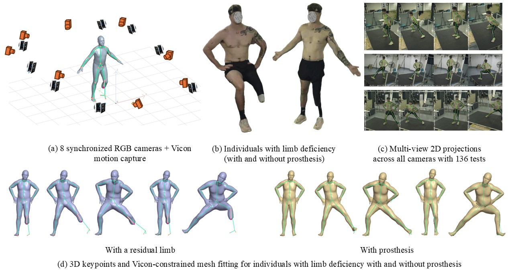
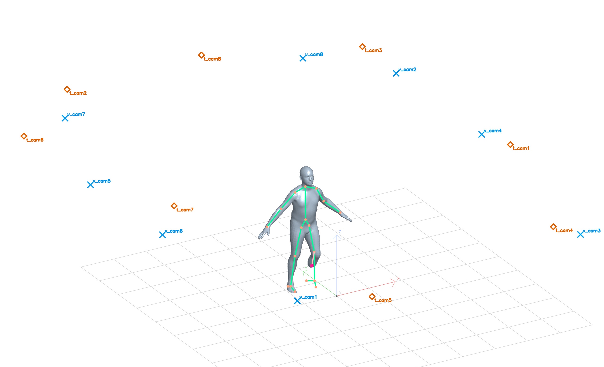
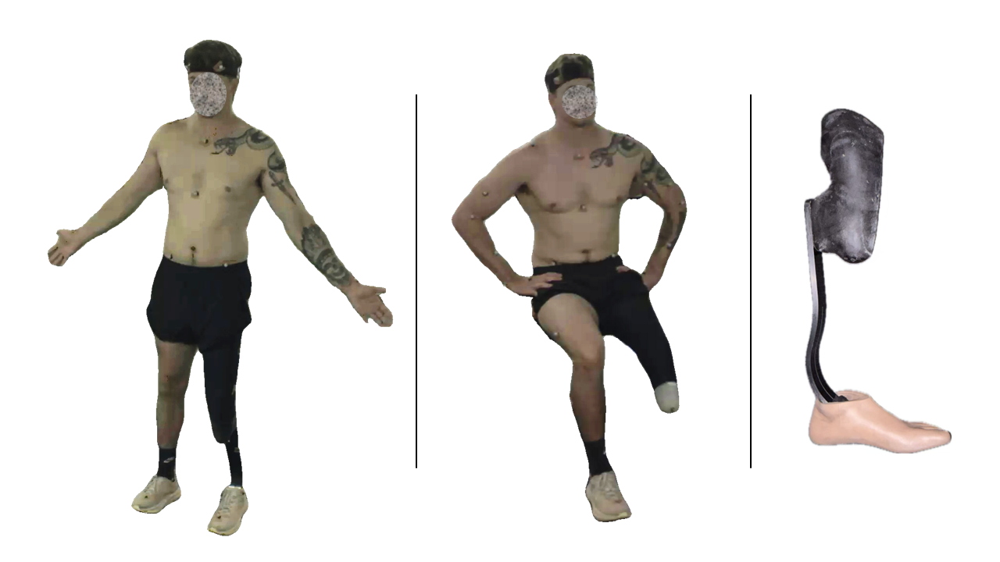
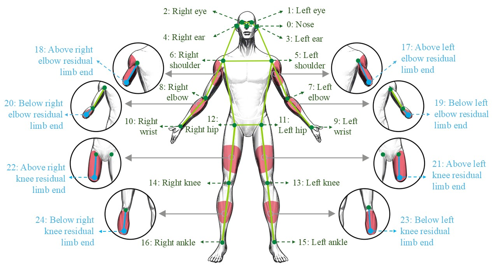

NeurIPS E&D 2026 dataset project
LD-Motion: A Calibrated Multi-View Human-Motion Dataset of Individuals with Limb Deficiency
LD-Motion captures synchronized eight-view RGB video and Vicon motion capture for individuals with limb deficiency, supporting separated evaluation of 2D pose, multi-view 3D pose, residual-limb localization, prosthesis-supported landmarks, and human mesh recovery.
Project summary
For NeurIPS reviewers
Reviewer data example package
This package is provided to make the released data structure and annotation layers directly inspectable during review.
Dear NeurIPS 2026 Reviewers,
We provide a compact LD-Motion data example package for direct inspection. It includes synchronized raw RGB videos, frame-level annotation files, Vicon-derived 2D keypoints with skeleton-overlay video demonstrations, Vicon-derived 3D keypoint annotations, and Vicon-constrained mesh annotations exported as OBJ files, together with rendered image examples for quick visual checks.
LD-Motion examples
Demostration of LD-Motion



LDPose-Prosthesis Dataset
LDPose-Prosthesis Dataset
We follow LDPose for non-worn cases by annotating the residual-limb endpoint and leaving unavailable distal keypoints unlabeled. For prosthesis-worn cases, we keep the residual endpoint and add visible, functionally relevant standard-layout keypoints on the prosthetic component.

Benchmark tasks
Benchmark for 2D pose, 3D pose, and mesh recovery
| Method | Fine- tuning |
LDPose-Prosthesis | LD-Motion | ||||||||||
|---|---|---|---|---|---|---|---|---|---|---|---|---|---|
| AP | AP50 | AP75 | AR | AR50 | AR75 | AP | AP50 | AP75 | AR | AR50 | AR75 | ||
| YOLOPose-l | 58.4 | 84.4 | 67.7 | 64.2 | 87.9 | 72.5 | 45.7 | 73.5 | 50.8 | 51.8 | 82.9 | 56.8 | |
| Maji et al. 2022 | ✓ | 62.8 | 82.3 | 68.6 | 65.8 | 84.8 | 71.2 | 32.7 | 46.2 | 35.6 | 35.4 | 49.2 | 38.0 |
| RTMPose-l | 63.3 | 87.9 | 74.1 | 67.3 | 88.3 | 76.4 | 69.1 | 97.8 | 82.6 | 72.8 | 98.6 | 86.2 | |
| Jiang et al. 2023 | ✓ | 77.4 | 89.9 | 84.4 | 79.7 | 90.3 | 85.0 | 72.6 | 96.9 | 81.3 | 77.6 | 97.6 | 84.2 |
| ViTPose-l | 65.0 | 88.9 | 76.0 | 69.2 | 89.0 | 78.7 | 71.8 | 98.8 | 87.1 | 75.5 | 99.0 | 90.2 | |
| Xu et al. 2022 | ✓ | 80.5 | 90.8 | 86.4 | 82.9 | 91.0 | 88.0 | 81.9 | 99.0 | 91.4 | 85.9 | 99.4 | 93.4 |
2D keypoint estimation on LDPose-Prosthesis and LD-Motion. COCO-style AP/AR is reported over the LDPose 25-keypoint schema; methods marked with ✓ are fine-tuned on LDPose-Prosthesis.
| Method | Fine-tuning | MPJPE ↓ | PA-MPJPE ↓ | MPJPE-ResidualEnd ↓ |
|---|---|---|---|---|
| YOLOPose-l | 209.28 | 96.96 | - | |
| Maji et al. 2022 | ✓ | 594.64 | 130.72 | 375.94 |
| RTMPose-l | 47.89 | 45.10 | - | |
| Jiang et al. 2023 | ✓ | 58.83 | 53.35 | 110.0 |
| ViTPose-l | 46.07 | 43.56 | - | |
| Xu et al. 2022 | ✓ | 50.25 | 47.61 | 90.12 |
Multi-view 3D keypoint estimation on LD-Motion. Models without fine-tuning do not predict residual-limb endpoints and are therefore not evaluated on MPJPE-ResidualEnd.
| Method | MPJPE ↓ | PA-MPJPE ↓ | MPJPE-ResidualEnd ↓ | MVE ↓ |
|---|---|---|---|---|
| TokenHMR [CVPR24] Dwivedi et al. 2024 | 148.81 | 87.30 | - | 177.81 |
| CameraHMR [3DV25] Patel and Black 2025 | 229.97 | 120.71 | - | 198.53 |
| PromptHMR [CVPR25] Wang et al. 2025 | 148.09 | 87.25 | - | 107.44 |
| ResiHMR Ying et al. 2026 | 135.32† | 76.14† | 154.22 | 101.47† |
3D human mesh recovery on LD-Motion. † indicates that ResiHMR is evaluated over anatomically present joints and post-amputation vertices. Fitted mesh references are used for benchmark diagnostics, not clinical surface-ground-truth evaluation.